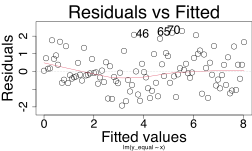

m1 <- lm(y ~ x1 + x2, data = df_nonlin)
car::crPlots(m1)Assumptions and diagnostics
Data Analysis for Psychology in R 2
L: The association between predictor and outcome is linear

N: Normally-distributed errors

The differences between the fitted line and each data point (aka the residuals) should be normally-distributed.
Check normality using:
- A histogram of residuals
- A Q-Q plot
2. To check normality of errors: Q-Q plots
We can compare the model’s residuals to what the residuals WOULD look like in a world where they were perfectly normally-distributed.
This is what a “quantile-quantile plot”, a Q-Q plot, does. The dots should follow the diagonal line.
Normally-distributed errors:
plot(m_norm, which = 2)
A few small divergences at the extremes.
Non-normally-distributed errors:
plot(m_nonnorm, which = 2)
Bottom left and top right diverge a lot!
A perfect match to the diagonal is rare. We must decide: is the distribution of errors normal enough that it’s OK to model them using the linear model machinery?
E: Equal variance of errors

- Equal variance of errors is also called “homoscedasticity” or “homogeneity of errors”.
- Unequal variance of errors is also called “heteroscedasticity” or “heterogeneity of errors”.
When errors don’t have equal variance, the model is not equally good at estimating the outcome for all values of the predictor.
Check by plotting the residuals against the fitted (predicted) outcome values.
To check equal variance of errors
A plot of residuals vs. predicted values shows:
- x axis: the predicted outcome values (aka the “fitted values” across their whole range).
- y axis: the residuals of each data point.
Errors with equal variance
plot(m_equal, which = 1)
Errors with unequal variance
plot(m_unequal, which = 1)
We want to see a random-looking cloud of data points with the same vertical distance from 0 across the whole x axis.
We must decide: is the variance of errors equal enough that it’s OK to model the data using the linear model machinery?
High influence
A single observation might influence our model’s estimates more than it should if
- it has an unusual value for the outcome variable (i.e., if it’s an outlier),
- it has an unusual value for the predictor variable (i.e., if it has high leverage),
- or both.
Outlier:
High leverage:
Outlier with high leverage:

Influence in two datasets

We diagnose high influence using Cook’s distance.
Vote: What to do if you find unusual data points

 Ignore them and pretend they don’t exist?
Ignore them and pretend they don’t exist?
Check if they could be a mistake?
Delete them?
Mention them in your write-up?
Replace them with less extreme values?
Check how much they influence your conclusions?
Sensitivity analysis
A sensitivity analysis asks: Do our conclusions change if we leave out the unusual data point(s)?
- If our conclusions don’t change, then the data points don’t matter too much.
- If our conclusions DO change, then we need to report that as a big limitation of our analysis.
We found one very high-influence data point, number 102:
Let’s remove that data point and re-fit the model.

Uncorrelated predictors
We have another data set called uncorr_df:
pairs(uncorr_df)
In uncorr_df, x1 and x2 are not very correlated.
The lack of correlation appears as a cloud of data points.
This week
Tasks:
 Work on exercises in labs
Work on exercises in labs
 Complete the weekly quiz
Complete the weekly quiz
Get support:
 Consult the flash cards
Consult the flash cards
 Ask questions anonymously on Piazza
Ask questions anonymously on Piazza
 We really like seeing you in office hours!
We really like seeing you in office hours!